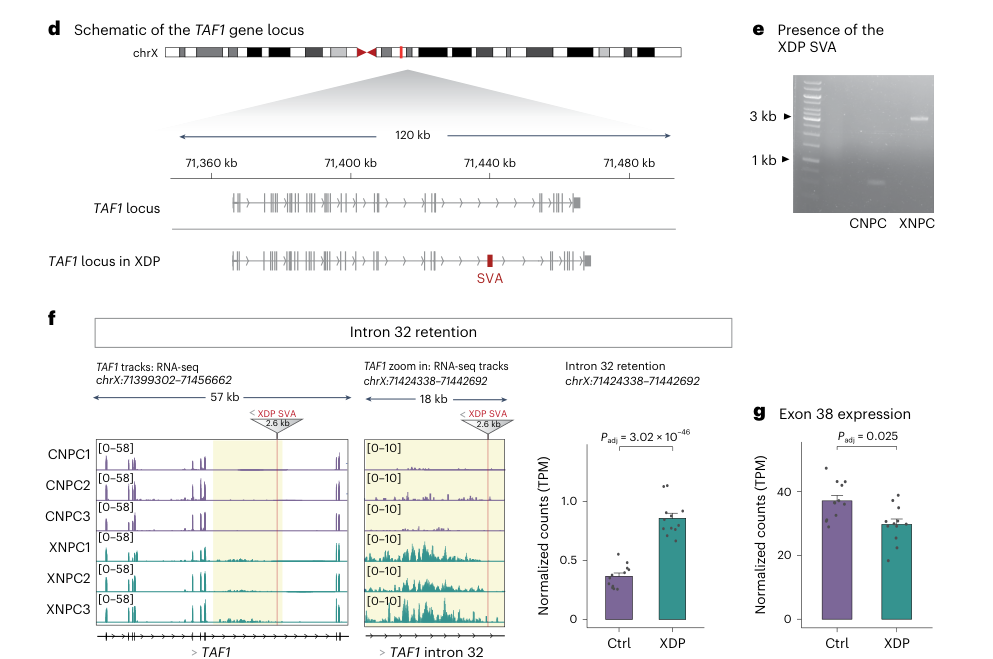

X-linked dystonia-parkinsonism (XDP; DYT3; "Lubag") is an X-linked recessive, adult-onset neurodegenerative movement disorder endemic to the island of Panay, Philippines. It is caused by a disease-specific SINE-VNTR-Alu (SVA) retrotransposon insertion in intron 32 of the TAF1 gene, which encodes the largest subunit of the general transcription factor TFIID. The insertion carries a polymorphic (CCCTCT)n hexanucleotide repeat whose length inversely correlates with age at onset. The SVA reduces expression of the canonical full-length TAF1 transcript and induces aberrant splicing and intron retention, producing a neuron-specific transcriptional dysregulation that drives progressive degeneration of the neostriatum (caudate nucleus and putamen). Affected men typically present in mid-adulthood with focal dystonia that generalizes over years, later accompanied or replaced by parkinsonism; female carriers are mostly asymptomatic.
Ask a research question about X-linked Dystonia-Parkinsonism. OpenScientist will conduct autonomous deep research using the Disorder Mechanisms Knowledge Base and PubMed literature (typically 10-30 minutes).
Do not include personal health information in your question. Questions and results are cached in your browser's local storage.
name: X-linked Dystonia-Parkinsonism
creation_date: "2026-06-03T00:00:00Z"
category: Mendelian
disease_term:
preferred_term: X-linked dystonia-parkinsonism
term:
id: MONDO:0010747
label: X-linked dystonia-parkinsonism
parents:
- focal dystonia
- combined dystonia
- parkinsonian disorder
synonyms:
- XDP
- DYT3
- Lubag
- DYT-TAF1
- X-linked torsion dystonia-parkinsonism
description: >
X-linked dystonia-parkinsonism (XDP; DYT3; "Lubag") is an X-linked recessive,
adult-onset neurodegenerative movement disorder endemic to the island of
Panay, Philippines. It is caused by a disease-specific SINE-VNTR-Alu (SVA)
retrotransposon insertion in intron 32 of the TAF1 gene, which encodes the
largest subunit of the general transcription factor TFIID. The insertion
carries a polymorphic (CCCTCT)n hexanucleotide repeat whose length inversely
correlates with age at onset. The SVA reduces expression of the canonical
full-length TAF1 transcript and induces aberrant splicing and intron
retention, producing a neuron-specific transcriptional dysregulation that
drives progressive degeneration of the neostriatum (caudate nucleus and
putamen). Affected men typically present in mid-adulthood with focal dystonia
that generalizes over years, later accompanied or replaced by parkinsonism;
female carriers are mostly asymptomatic.
references:
- reference: PMID:20301662
title: "X-Linked Dystonia-Parkinsonism."
tags:
- GeneReviews
inheritance:
- name: X-linked recessive
inheritance_term:
preferred_term: X-linked recessive inheritance
term:
id: HP:0001419
label: X-linked recessive inheritance
description: >
XDP is inherited in an X-linked manner. Affected individuals are almost
exclusively male; female carriers are usually asymptomatic, although a
small minority manifest dystonia, parkinsonism, or chorea.
evidence:
- reference: PMID:20301662
reference_title: "X-Linked Dystonia-Parkinsonism."
supports: SUPPORT
evidence_source: HUMAN_CLINICAL
snippet: "XDP is inherited in an X-linked manner."
explanation: GeneReviews states the X-linked inheritance pattern.
- reference: PMID:12928496
reference_title: "Specific sequence changes in multiple transcript system DYT3 are associated with X-linked dystonia parkinsonism."
supports: SUPPORT
evidence_source: HUMAN_CLINICAL
snippet: "X-linked dystonia parkinsonism (XDP) is an X-linked recessive adult onset movement disorder characterized by both dystonia and parkinsonism."
explanation: Confirms X-linked recessive inheritance and the dystonia-parkinsonism phenotype.
epidemiology:
- name: Endemic to Panay, Philippines
description: >
XDP is endemic to the island of Panay in the Philippines and affects men
whose maternal ancestry traces to Panay; the disorder is associated with a
single shared founder haplotype.
evidence:
- reference: PMID:37265597
reference_title: "Establishing a natural history of X-linked dystonia parkinsonism."
supports: SUPPORT
evidence_source: HUMAN_CLINICAL
snippet: "X-linked dystonia parkinsonism is a neurodegenerative movement disorder that affects men whose mothers originate from the island of Panay, Philippines."
explanation: Establishes the endemic geographic and maternal-ancestry distribution.
- reference: PMID:29474918
reference_title: "Dissecting the Causal Mechanism of X-Linked Dystonia-Parkinsonism by Integrating Genome and Transcriptome Assembly."
supports: SUPPORT
evidence_source: HUMAN_CLINICAL
snippet: "X-linked Dystonia-Parkinsonism (XDP) is a Mendelian neurodegenerative disease that is endemic to the Philippines and is associated with a founder haplotype."
explanation: Confirms endemicity to the Philippines and the founder haplotype.
prevalence:
- population: Panay, Philippines (males)
notes: >
XDP is a rare disorder primarily affecting Filipino men with maternal
ancestry from Panay; reported prevalence is highest in this endemic
population and rare elsewhere.
evidence:
- reference: PMID:20301662
reference_title: "X-Linked Dystonia-Parkinsonism."
supports: SUPPORT
evidence_source: HUMAN_CLINICAL
snippet: "XDP afflicts primarily Filipino men and, rarely, women."
explanation: GeneReviews notes the disorder primarily affects Filipino men and rarely women.
progression:
- phase: Onset and course
notes: >
Mean age of onset in men is 39 years. The clinical course is highly
variable: parkinsonism may be the initial presenting sign and is later
overshadowed by dystonia as the disease progresses. Individuals who
develop combined parkinsonism and dystonia can progress to multifocal or
generalized symptoms within a few years and die prematurely from pneumonia
or intercurrent infections.
evidence:
- reference: PMID:20301662
reference_title: "X-Linked Dystonia-Parkinsonism."
supports: SUPPORT
evidence_source: HUMAN_CLINICAL
snippet: "The mean age of onset in men is 39 years; the clinical course is highly variable with parkinsonism as the initial presenting sign, overshadowed by dystonia as the disease progresses."
explanation: GeneReviews describes the age of onset and progressive course.
- reference: PMID:20301662
reference_title: "X-Linked Dystonia-Parkinsonism."
supports: SUPPORT
evidence_source: HUMAN_CLINICAL
snippet: "those who develop a combination of parkinsonism and dystonia can develop multifocal or generalized symptoms within a few years and die prematurely from pneumonia or intercurrent infections"
explanation: Documents progression to generalized disease and premature death from infection.
phenotypes:
- name: Dystonia
description: >
Dystonia develops focally, most commonly in the jaw, neck, trunk, and
eyes, and generalizes over time. Jaw dystonia often progressing to neck
dystonia is the most characteristic feature.
phenotype_term:
preferred_term: Dystonia
term:
id: HP:0001332
label: Dystonia
clinical_course: PROGRESSIVE
evidence:
- reference: PMID:20301662
reference_title: "X-Linked Dystonia-Parkinsonism."
supports: SUPPORT
evidence_source: HUMAN_CLINICAL
snippet: "The dystonia develops focally, most commonly in the jaw, neck, trunk, and eyes, and less commonly in the limbs, tongue, pharynx, and larynx, the most characteristic being jaw dystonia often progressing to neck dystonia."
explanation: GeneReviews describes the focal-to-generalized dystonia distribution.
- name: Oromandibular (jaw) dystonia
description: >
Jaw dystonia is among the most characteristic focal presentations and
often progresses to neck dystonia.
phenotype_term:
preferred_term: Oromandibular dystonia
term:
id: HP:0012048
label: Oromandibular dystonia
evidence:
- reference: PMID:20301662
reference_title: "X-Linked Dystonia-Parkinsonism."
supports: SUPPORT
evidence_source: HUMAN_CLINICAL
snippet: "the most characteristic being jaw dystonia often progressing to neck dystonia"
explanation: GeneReviews identifies jaw (oromandibular) dystonia as the most characteristic focal site.
- name: Generalized dystonia
description: >
Focal dystonia becomes multifocal or generalized over time, particularly
in individuals who develop combined dystonia and parkinsonism.
phenotype_term:
preferred_term: Generalized dystonia
term:
id: HP:0007325
label: Generalized dystonia
evidence:
- reference: PMID:20301662
reference_title: "X-Linked Dystonia-Parkinsonism."
supports: SUPPORT
evidence_source: HUMAN_CLINICAL
snippet: "those who develop a combination of parkinsonism and dystonia can develop multifocal or generalized symptoms within a few years"
explanation: GeneReviews documents progression to generalized dystonia.
- name: Parkinsonism
description: >
Adult-onset parkinsonism that may be the initial presenting sign and
includes resting tremor, bradykinesia, rigidity, and postural instability.
phenotype_term:
preferred_term: Parkinsonism
term:
id: HP:0001300
label: Parkinsonism
evidence:
- reference: PMID:20301662
reference_title: "X-Linked Dystonia-Parkinsonism."
supports: SUPPORT
evidence_source: HUMAN_CLINICAL
snippet: "Features of parkinsonism include resting tremor, bradykinesia, rigidity, postural instability, and severe shuffling gait."
explanation: GeneReviews enumerates the parkinsonian features of XDP.
- name: Resting tremor
description: Resting tremor as a feature of XDP parkinsonism.
phenotype_term:
preferred_term: Resting tremor
term:
id: HP:0002322
label: Resting tremor
evidence:
- reference: PMID:20301662
reference_title: "X-Linked Dystonia-Parkinsonism."
supports: SUPPORT
evidence_source: HUMAN_CLINICAL
snippet: "Features of parkinsonism include resting tremor, bradykinesia, rigidity, postural instability, and severe shuffling gait."
explanation: GeneReviews lists resting tremor among XDP parkinsonian features.
- name: Bradykinesia
description: Bradykinesia as a feature of XDP parkinsonism.
phenotype_term:
preferred_term: Bradykinesia
term:
id: HP:0002067
label: Bradykinesia
evidence:
- reference: PMID:20301662
reference_title: "X-Linked Dystonia-Parkinsonism."
supports: SUPPORT
evidence_source: HUMAN_CLINICAL
snippet: "Features of parkinsonism include resting tremor, bradykinesia, rigidity, postural instability, and severe shuffling gait."
explanation: GeneReviews lists bradykinesia among XDP parkinsonian features.
- name: Rigidity
description: Rigidity as a feature of XDP parkinsonism.
phenotype_term:
preferred_term: Rigidity
term:
id: HP:0002063
label: Rigidity
evidence:
- reference: PMID:20301662
reference_title: "X-Linked Dystonia-Parkinsonism."
supports: SUPPORT
evidence_source: HUMAN_CLINICAL
snippet: "Features of parkinsonism include resting tremor, bradykinesia, rigidity, postural instability, and severe shuffling gait."
explanation: GeneReviews lists rigidity among XDP parkinsonian features.
- name: Postural instability
description: Postural instability as a feature of XDP parkinsonism.
phenotype_term:
preferred_term: Postural instability
term:
id: HP:0002172
label: Postural instability
evidence:
- reference: PMID:20301662
reference_title: "X-Linked Dystonia-Parkinsonism."
supports: SUPPORT
evidence_source: HUMAN_CLINICAL
snippet: "Features of parkinsonism include resting tremor, bradykinesia, rigidity, postural instability, and severe shuffling gait."
explanation: GeneReviews lists postural instability among XDP parkinsonian features.
- name: Shuffling gait
description: Severe shuffling gait as a feature of XDP parkinsonism.
phenotype_term:
preferred_term: Shuffling gait
term:
id: HP:0002362
label: Shuffling gait
evidence:
- reference: PMID:20301662
reference_title: "X-Linked Dystonia-Parkinsonism."
supports: SUPPORT
evidence_source: HUMAN_CLINICAL
snippet: "Features of parkinsonism include resting tremor, bradykinesia, rigidity, postural instability, and severe shuffling gait."
explanation: GeneReviews lists severe shuffling gait among XDP parkinsonian features.
- name: Hyposmia
description: >
Olfactory dysfunction occurs early in the disease and may be used to
support the diagnosis when molecular genetic testing is unavailable.
phenotype_term:
preferred_term: Hyposmia
term:
id: HP:0004409
label: Hyposmia
evidence:
- reference: PMID:20301662
reference_title: "X-Linked Dystonia-Parkinsonism."
supports: SUPPORT
evidence_source: HUMAN_CLINICAL
snippet: "Olfactory testing indicates olfactory dysfunction early in the disease and may be used to support the diagnosis when molecular genetic testing is not available."
explanation: GeneReviews documents early olfactory dysfunction in XDP.
- name: Dysphagia
description: >
Swallowing impairment is a complication of XDP; botulinum toxin may worsen
swallowing in individuals with preexisting dysphagia, and swallowing
evaluations are recommended to minimize aspiration risk.
phenotype_term:
preferred_term: Dysphagia
term:
id: HP:0002015
label: Dysphagia
evidence:
- reference: PMID:20301662
reference_title: "X-Linked Dystonia-Parkinsonism."
supports: SUPPORT
evidence_source: HUMAN_CLINICAL
snippet: "Botulinum toxin injections improve focal dystonia but may worsen swallowing in individuals with preexisting dysphagia."
explanation: GeneReviews documents dysphagia as a clinically relevant feature in XDP.
- name: Chorea
description: >
A small minority of female carriers may manifest chorea, and chorea may
occur in the phenotypic spectrum of XDP without dystonia.
phenotype_term:
preferred_term: Chorea
term:
id: HP:0002072
label: Chorea
evidence:
- reference: PMID:20301662
reference_title: "X-Linked Dystonia-Parkinsonism."
supports: SUPPORT
evidence_source: HUMAN_CLINICAL
snippet: "Female carriers are mostly asymptomatic, though a small minority may manifest dystonia, parkinsonism, or chorea."
explanation: GeneReviews documents chorea as part of the XDP phenotypic spectrum.
pathophysiology:
- name: SVA retrotransposon insertion in TAF1
description: >
A disease-specific SINE-VNTR-Alu (SVA) retrotransposon is inserted in an
intron of TAF1 (intron 32). The element includes a polymorphic (CCCTCT)n
hexanucleotide repeat whose length is inversely correlated with age at
disease onset. This is the founding genetic lesion of XDP.
genes:
- preferred_term: TAF1
term:
id: hgnc:11535
label: TAF1
evidence:
- reference: PMID:29474918
reference_title: "Dissecting the Causal Mechanism of X-Linked Dystonia-Parkinsonism by Integrating Genome and Transcriptome Assembly."
supports: SUPPORT
evidence_source: HUMAN_CLINICAL
snippet: "We integrated multiple genome and transcriptome assembly technologies to narrow the causal mutation to the TAF1 locus, which included a SINE-VNTR-Alu (SVA) retrotransposition into intron 32 of the gene."
explanation: Localizes the causal SVA insertion to intron 32 of TAF1.
- reference: PMID:17273961
reference_title: "Reduced neuron-specific expression of the TAF1 gene is associated with X-linked dystonia-parkinsonism."
supports: SUPPORT
evidence_source: HUMAN_CLINICAL
snippet: "We found a disease-specific SVA (short interspersed nuclear element, variable number of tandem repeats, and Alu composite) retrotransposon insertion in an intron of the TATA-binding protein-associated factor 1 gene (TAF1)"
explanation: Original identification of the disease-specific SVA insertion in TAF1.
downstream:
- target: TAF1 transcriptional dysregulation
description: >
The intronic SVA alters TAF1 splicing and reduces full-length TAF1
transcript levels in neurons.
evidence:
- reference: PMID:31116117
reference_title: "X-Linked Dystonia-Parkinsonism: recent advances."
supports: SUPPORT
evidence_source: IN_VITRO
snippet: "In cell models, the SVA alters TAF1 splicing and reduces levels of full-length transcript."
explanation: Links the SVA insertion to altered splicing and reduced TAF1 transcript.
- name: TAF1 transcriptional dysregulation
description: >
The SVA reduces neuron-specific expression of the canonical full-length
cTAF1 transcript and induces aberrant transcription, alternative splicing,
and intron retention in proximity to the SVA. TAF1 encodes the largest
subunit of the general transcription factor TFIID, so reduced TAF1 impairs
RNA polymerase II transcription. CRISPR/Cas9 excision of the SVA rescues
the XDP-specific transcriptional signature and normalizes TAF1 expression.
biological_processes:
- preferred_term: regulation of RNA polymerase II transcription
term:
id: GO:0006357
label: regulation of transcription by RNA polymerase II
modifier: DECREASED
- preferred_term: aberrant mRNA splicing and intron retention
term:
id: GO:0000398
label: mRNA splicing, via spliceosome
modifier: ABNORMAL
evidence:
- reference: PMID:29474918
reference_title: "Dissecting the Causal Mechanism of X-Linked Dystonia-Parkinsonism by Integrating Genome and Transcriptome Assembly."
supports: SUPPORT
evidence_source: IN_VITRO
snippet: "Transcriptome analyses identified decreased expression of the canonical cTAF1 transcript among XDP probands, and de novo assembly across multiple pluripotent stem-cell-derived neuronal lineages discovered aberrant TAF1 transcription that involved alternative splicing and intron retention (IR) in proximity to the SVA that was anti-correlated with overall TAF1 expression."
explanation: Demonstrates decreased canonical TAF1 transcript and SVA-associated aberrant splicing and intron retention.
- reference: PMID:29474918
reference_title: "Dissecting the Causal Mechanism of X-Linked Dystonia-Parkinsonism by Integrating Genome and Transcriptome Assembly."
supports: SUPPORT
evidence_source: IN_VITRO
snippet: "CRISPR/Cas9 excision of the SVA rescued this XDP-specific transcriptional signature and normalized TAF1 expression in probands."
explanation: Establishes the SVA as causal for the transcriptional defect via rescue on excision.
- reference: PMID:17273961
reference_title: "Reduced neuron-specific expression of the TAF1 gene is associated with X-linked dystonia-parkinsonism."
supports: SUPPORT
evidence_source: HUMAN_CLINICAL
snippet: "significantly decreased expression levels of TAF1 and the dopamine receptor D2 gene (DRD2) in the caudate nucleus"
explanation: Shows reduced TAF1 (and DRD2) expression in patient caudate.
- reference: PMID:28672841
reference_title: "Clinicopathological Phenotype and Genetics of X-Linked Dystonia-Parkinsonism (XDP; DYT3; Lubag)."
supports: SUPPORT
evidence_source: HUMAN_CLINICAL
snippet: "XDP has been identified as a transcriptional dysregulation syndrome with impaired expression of the TAF1 (TATA box-binding protein associated factor 1) gene, which is a critical component of the cellular transcription machinery."
explanation: Frames XDP as a transcriptional dysregulation syndrome driven by impaired TAF1.
- reference: PMID:38042508
reference_title: "Proteomic analysis of X-linked dystonia parkinsonism disease striatal neurons reveals altered RNA metabolism and splicing."
supports: SUPPORT
evidence_source: IN_VITRO
snippet: "The genetic cause for XDP is an insertion of a SINE-VNTR-Alu (SVA)-type retrotransposon within intron 32 of TATA-binding protein associated factor 1 (TAF1) that causes an alteration of TAF1 splicing, partial intron retention, and decreased transcription."
explanation: Independent confirmation that the SVA causes altered TAF1 splicing, partial intron retention, and decreased transcription.
downstream:
- target: Striatal medium spiny neuron degeneration
description: >
Neuron-specific TAF1 transcriptional dysregulation drives progressive
loss of striatal (neostriatal) neurons.
evidence:
- reference: PMID:28672841
reference_title: "Clinicopathological Phenotype and Genetics of X-Linked Dystonia-Parkinsonism (XDP; DYT3; Lubag)."
supports: SUPPORT
evidence_source: HUMAN_CLINICAL
snippet: "The major neuropathology of XDP is progressive neuronal loss in the neostriatum (i.e., the caudate nucleus and putamen)."
explanation: Links the molecular defect to neostriatal neurodegeneration.
- name: Striatal medium spiny neuron degeneration
description: >
The major neuropathology of XDP is progressive neuronal loss in the
neostriatum (caudate nucleus and putamen), the site enriched for GABAergic
medium spiny neurons. Post-mortem studies show a marked loss of striatal
neuropeptide Y-positive neurons and nerve fibres in the caudate and
putamen, implicating loss of striatal neuronal populations in the
progressive degeneration. Striatal neurodegeneration is thought to produce
the dystonia and parkinsonism of XDP.
cell_types:
- preferred_term: striatal medium spiny neuron
term:
id: CL:1001474
label: medium spiny neuron
modifier: DECREASED
locations:
- preferred_term: neostriatum (caudate nucleus and putamen)
term:
id: UBERON:0005383
label: caudate-putamen
biological_processes:
- preferred_term: striatal neuron apoptotic process
term:
id: GO:0051402
label: neuron apoptotic process
modifier: INCREASED
evidence:
- reference: PMID:28672841
reference_title: "Clinicopathological Phenotype and Genetics of X-Linked Dystonia-Parkinsonism (XDP; DYT3; Lubag)."
supports: SUPPORT
evidence_source: HUMAN_CLINICAL
snippet: "The major neuropathology of XDP is progressive neuronal loss in the neostriatum (i.e., the caudate nucleus and putamen)."
explanation: Documents progressive neostriatal neuronal loss as the major neuropathology.
- reference: PMID:23599389
reference_title: "Defects in the striatal neuropeptide Y system in X-linked dystonia-parkinsonism."
supports: SUPPORT
evidence_source: HUMAN_CLINICAL
snippet: "In patients with X-linked dystonia-parkinsonism, we found a significant decrease in the number of neuropeptide Y-positive cells accompanied by a marked loss of their nerve fibres in the caudate nucleus and putamen."
explanation: Post-mortem evidence of striatal neuronal loss (neuropeptide Y neurons) in caudate and putamen.
- reference: PMID:23599389
reference_title: "Defects in the striatal neuropeptide Y system in X-linked dystonia-parkinsonism."
supports: PARTIAL
evidence_source: HUMAN_CLINICAL
snippet: "suggesting its possible implication in the mechanism by which a progressive loss of striatal neurons occurs in X-linked dystonia-parkinsonism"
explanation: Connects striatal neuropeptide Y system defects to the progressive loss of striatal neurons.
- reference: PMID:38042508
reference_title: "Proteomic analysis of X-linked dystonia parkinsonism disease striatal neurons reveals altered RNA metabolism and splicing."
supports: SUPPORT
evidence_source: IN_VITRO
snippet: "Although TAF1 is expressed in all organs, medium spiny neurons (MSNs) within the striatum are one of the cell types most affected in XDP."
explanation: Identifies striatal medium spiny neurons as the most affected cell type, consistent with selective MSN vulnerability.
genetic:
- name: TAF1
gene_term:
preferred_term: TAF1
term:
id: hgnc:11535
label: TAF1
inheritance:
- name: X-linked recessive
inheritance_term:
preferred_term: X-linked recessive inheritance
term:
id: HP:0001419
label: X-linked recessive inheritance
evidence:
- reference: PMID:12928496
reference_title: "Specific sequence changes in multiple transcript system DYT3 are associated with X-linked dystonia parkinsonism."
supports: SUPPORT
evidence_source: HUMAN_CLINICAL
snippet: "X-linked dystonia parkinsonism (XDP) is an X-linked recessive adult onset movement disorder characterized by both dystonia and parkinsonism."
explanation: Confirms the X-linked recessive inheritance pattern of the TAF1-associated disorder.
notes: >
XDP is caused by an antisense SINE-VNTR-Alu (SVA) retrotransposon insertion
within an intron of TAF1, inherited together with additional noncoding
sequence changes as a single shared founder haplotype in all reported
cases. A polymorphic (CCCTCT)n hexanucleotide repeat within the SVA is an
age-at-onset and expressivity modifier: repeat length is inversely
correlated with age at onset and positively correlated with disease
severity and TAF1 repression.
evidence:
- reference: PMID:29229810
reference_title: "Disease onset in X-linked dystonia-parkinsonism correlates with expansion of a hexameric repeat within an SVA retrotransposon in TAF1."
supports: SUPPORT
evidence_source: HUMAN_CLINICAL
snippet: "X-linked dystonia-parkinsonism (XDP) is a neurodegenerative disease associated with an antisense insertion of a SINE-VNTR-Alu (SVA)-type retrotransposon within an intron of TAF1"
explanation: Describes the antisense SVA retrotransposon insertion in TAF1.
- reference: PMID:29229810
reference_title: "Disease onset in X-linked dystonia-parkinsonism correlates with expansion of a hexameric repeat within an SVA retrotransposon in TAF1."
supports: SUPPORT
evidence_source: HUMAN_CLINICAL
snippet: "we examined the sequence of this SVA in XDP patients (n = 140) and detected polymorphic variation in the length of a hexanucleotide repeat domain, (CCCTCT)n The number of repeats in these cases ranged from 35 to 52 and showed a highly significant inverse correlation with age at disease onset."
explanation: Establishes the (CCCTCT)n hexanucleotide repeat and its inverse correlation with age at onset.
- reference: PMID:30973967
reference_title: "A hexanucleotide repeat modifies expressivity of X-linked dystonia parkinsonism."
supports: SUPPORT
evidence_source: HUMAN_CLINICAL
snippet: "RN showed significant inverse correlations with AAO and with TAF1 expression and a positive correlation with disease severity and cognitive dysfunction."
explanation: Confirms the hexanucleotide repeat as a modifier of onset, TAF1 expression, and severity.
- reference: PMID:12928496
reference_title: "Specific sequence changes in multiple transcript system DYT3 are associated with X-linked dystonia parkinsonism."
supports: SUPPORT
evidence_source: HUMAN_CLINICAL
snippet: "Two of these transcripts include distal portions of the TAF1 gene (TATA-box binding protein-associated factor 1) and are alternatively spliced."
explanation: Early mapping of the DYT3 locus to the TAF1 multiple transcript system.
treatments:
- name: Anticholinergic therapy
description: >
Anticholinergic agents (e.g., trihexyphenidyl) are used in the early
stages of dystonia in XDP.
therapeutic_modality: SMALL_MOLECULE
treatment_term:
preferred_term: pharmacotherapy
term:
id: MAXO:0000058
label: pharmacotherapy
therapeutic_agent:
- preferred_term: trihexyphenidyl
term:
id: CHEBI:9720
label: Trihexyphenidyl
target_phenotypes:
- preferred_term: Dystonia
term:
id: HP:0001332
label: Dystonia
evidence:
- reference: PMID:20301662
reference_title: "X-Linked Dystonia-Parkinsonism."
supports: SUPPORT
evidence_source: HUMAN_CLINICAL
snippet: "Anticholinergic agents, benzodiazepines, and sometimes neuroleptics are used in the early stages of dystonia"
explanation: GeneReviews recommends anticholinergic agents for early-stage dystonia.
- name: Tetrabenazine and zolpidem
description: >
Zolpidem and tetrabenazine are used after dystonia becomes multifocal or
generalized.
therapeutic_modality: SMALL_MOLECULE
treatment_term:
preferred_term: pharmacotherapy
term:
id: MAXO:0000058
label: pharmacotherapy
therapeutic_agent:
- preferred_term: tetrabenazine
term:
id: CHEBI:9467
label: tetrabenazine
- preferred_term: zolpidem
term:
id: CHEBI:10125
label: zolpidem
target_phenotypes:
- preferred_term: Generalized dystonia
term:
id: HP:0007325
label: Generalized dystonia
evidence:
- reference: PMID:20301662
reference_title: "X-Linked Dystonia-Parkinsonism."
supports: SUPPORT
evidence_source: HUMAN_CLINICAL
snippet: "zolpidem and tetrabenazine are used after dystonia becomes multifocal or generalized"
explanation: GeneReviews recommends zolpidem and tetrabenazine for multifocal/generalized dystonia.
- name: Botulinum toxin injection
description: >
Botulinum toxin injections improve focal dystonia but may worsen
swallowing in individuals with preexisting dysphagia.
therapeutic_modality: OTHER
treatment_term:
preferred_term: botulinum toxin type A therapy
term:
id: MAXO:0009016
label: botulinum toxin type A therapy
target_phenotypes:
- preferred_term: Oromandibular dystonia
term:
id: HP:0012048
label: Oromandibular dystonia
evidence:
- reference: PMID:20301662
reference_title: "X-Linked Dystonia-Parkinsonism."
supports: SUPPORT
evidence_source: HUMAN_CLINICAL
snippet: "Botulinum toxin injections improve focal dystonia but may worsen swallowing in individuals with preexisting dysphagia."
explanation: GeneReviews documents botulinum toxin for focal dystonia and its dysphagia caution.
- name: Levodopa and dopamine agonists
description: >
Parkinsonism in XDP is treated with levodopa and dopamine agonists to
control tremor.
therapeutic_modality: SMALL_MOLECULE
treatment_term:
preferred_term: pharmacotherapy
term:
id: MAXO:0000058
label: pharmacotherapy
therapeutic_agent:
- preferred_term: levodopa
term:
id: CHEBI:15765
label: L-dopa
target_phenotypes:
- preferred_term: Parkinsonism
term:
id: HP:0001300
label: Parkinsonism
evidence:
- reference: PMID:20301662
reference_title: "X-Linked Dystonia-Parkinsonism."
supports: SUPPORT
evidence_source: HUMAN_CLINICAL
snippet: "Parkinsonism is treated with levodopa and dopamine agonists to control tremor."
explanation: GeneReviews recommends levodopa and dopamine agonists for XDP parkinsonism.
- name: Bilateral pallidal deep brain stimulation
description: >
Bilateral pallidal deep brain stimulation may be used to treat advanced
disease and medically refractory dystonia, although it may have less
effect on parkinsonism. In patients with combined dystonia and
parkinsonism, pallidal DBS has produced rapid improvement of hyperkinetic
movements, but effects on hypokinetic features have been inconsistent.
therapeutic_modality: DEVICE
treatment_term:
preferred_term: deep brain stimulation
term:
id: MAXO:0000943
label: deep brain stimulation
target_phenotypes:
- preferred_term: Generalized dystonia
term:
id: HP:0007325
label: Generalized dystonia
evidence:
- reference: PMID:20301662
reference_title: "X-Linked Dystonia-Parkinsonism."
supports: SUPPORT
evidence_source: HUMAN_CLINICAL
snippet: "Bilateral pallidal deep brain stimulation may be used to treat advanced disease and medically refractory dystonia, although it may have less effect on parkinsonism."
explanation: GeneReviews documents pallidal DBS for advanced/refractory dystonia.
- reference: PMID:31116117
reference_title: "X-Linked Dystonia-Parkinsonism: recent advances."
supports: SUPPORT
evidence_source: HUMAN_CLINICAL
snippet: "In patients exhibiting features of both dystonia and parkinsonism, pallidal DBS has resulted in rapid improvement of hyperkinetic movements, but effects on hypokinetic features have been inconsistent."
explanation: Confirms DBS benefit for hyperkinetic (dystonic) features with inconsistent effect on parkinsonism.
mechanistic_hypotheses:
- hypothesis_group_id: g4_transcriptional_interference
hypothesis_label: G-quadruplex-mediated transcriptional interference at the XDP SVA
status: EMERGING
description: >
The G-rich (CCCTCT)n hexameric repeat within the XDP SVA folds into stable
G-quadruplex (G4) structures that interfere with TAF1 transcription.
Pharmacologic stabilization of these G4s reduces TAF1 transcripts while
destabilization (unfolding) increases TAF1 transcripts, implicating G4
formation as a major cause of aberrant TAF1 expression and a candidate
therapeutic target.
evidence:
- reference: PMID:39287133
reference_title: "G-quadruplexes in an SVA retrotransposon cause aberrant TAF1 gene expression in X-linked dystonia parkinsonism."
supports: SUPPORT
evidence_source: IN_VITRO
snippet: "Our data indicate that G4 formation in the XDP SVA is a major cause of aberrant TAF1 expression"
explanation: Establishes G-quadruplex formation in the XDP SVA as a major driver of aberrant TAF1 expression.
- reference: PMID:39287133
reference_title: "G-quadruplexes in an SVA retrotransposon cause aberrant TAF1 gene expression in X-linked dystonia parkinsonism."
supports: SUPPORT
evidence_source: IN_VITRO
snippet: "stabilisation of the XDP SVA G4s reduces TAF1 transcripts downstream and around the SVA, and increases upstream transcripts, while destabilisation using the G4 unfolder PhpC increases TAF1 transcripts"
explanation: Demonstrates bidirectional pharmacologic modulation of TAF1 transcription by G4 ligands, supporting G4s as a causal and druggable mechanism.
- hypothesis_group_id: sva_epigenetic_repression
hypothesis_label: ZNF91-dependent mini-heterochromatin constrains the XDP SVA
status: EMERGING
description: >
An innate epigenetic defense system mediated by the KRAB zinc-finger
protein ZNF91 deposits H3K9me3 and DNA methylation over SVA elements,
forming mini-heterochromatin domains that attenuate the cis-regulatory
impact of the XDP SVA. Loss of this local heterochromatin worsens the XDP
molecular phenotype, increasing TAF1 intron retention and reducing TAF1
expression.
evidence:
- reference: PMID:38834915
reference_title: "Mini-heterochromatin domains constrain the cis-regulatory impact of SVA transposons in human brain development and disease."
supports: SUPPORT
evidence_source: IN_VITRO
snippet: "the KRAB zinc finger protein ZNF91 establishes H3K9me3 and DNA methylation over SVAs"
explanation: Identifies ZNF91-mediated heterochromatin as the epigenetic control system over SVA elements.
- reference: PMID:38834915
reference_title: "Mini-heterochromatin domains constrain the cis-regulatory impact of SVA transposons in human brain development and disease."
supports: SUPPORT
evidence_source: IN_VITRO
snippet: "removal of local heterochromatin severely aggravates the XDP molecular phenotype, resulting in increased TAF1 intron retention and reduced expression"
explanation: Shows that loss of SVA heterochromatin worsens TAF1 intron retention and reduces expression, linking epigenetic repression to the XDP molecular phenotype.
clinical_trials:
- name: NCT05592028
description: >
Bilateral transcranial magnetic resonance-guided focused ultrasound
(MRgFUS) pallidothalamic tractotomy for patients with genetically
confirmed X-linked dystonia-parkinsonism, conducted at the Philippine
General Hospital. The primary outcome is change in the XDP-Movement
Disorder Society of the Philippines Scale; secondary measures include the
Burke-Fahn-Marsden Dystonia Rating Scale and MDS-UPDRS Part III.
target_phenotypes:
- preferred_term: Dystonia
term:
id: HP:0001332
label: Dystonia
- preferred_term: Parkinsonism
term:
id: HP:0001300
label: Parkinsonism
evidence:
- reference: PMID:37596524
reference_title: "Transcranial magnetic resonance-guided focused ultrasound pallidothalamic tractotomy for patients with X-linked dystonia-parkinsonism: a study protocol."
supports: SUPPORT
evidence_source: HUMAN_CLINICAL
snippet: "This study aims to determine the improvement in dystonia and parkinsonism in patients with XDP after MRgFUS pallidothalamic tractotomy."
explanation: The registered protocol (NCT05592028) evaluates MRgFUS pallidothalamic tractotomy for dystonia and parkinsonism in XDP.
Disease: X-linked dystonia–parkinsonism (XDP)
Category: Mendelian; X-linked (recessive) movement disorder
Key synonym set: DYT3; DYT/PARK-TAF1; “Lubag” (pozojevic2022xlinkeddystoniaparkinsonismover pages 1-2, pozojevic2022factorsinfluencingreduced pages 1-2)
XDP is an adult-onset, progressive neurodegenerative movement disorder with a strong founder effect in individuals of Filipino ancestry, especially from Panay Island in the Philippines. Clinically, it most often begins as focal dystonia that generalizes over several years and later evolves toward combined dystonia–parkinsonism and then a parkinsonian-predominant phase in surviving patients. The causal variant is a founder SINE–VNTR–Alu (SVA) retrotransposon insertion in TAF1 intron 32 that disrupts TAF1 transcription and RNA processing; a polymorphic intronic (CCCTCT)n hexamer repeat within the SVA strongly modifies age at onset and shows tissue-specific somatic instability. Recent 2024 work provides mechanistic detail implicating (i) G-quadruplex formation within the amplified repeat domain and (ii) an innate epigenetic defense mediated by the KRAB zinc-finger protein ZNF91 that deposits H3K9me3/DNA methylation (“mini-heterochromatin”) over SVAs and modulates the XDP molecular phenotype. (nicoletto2024gquadruplexesinan pages 1-2, horvath2024miniheterochromatindomainsconstrain pages 1-2)
XDP is an adult-onset neurodegenerative movement disorder characterized by dystonia and parkinsonism, endemic to the Philippines with strong association to Panay Island and Filipino ancestry. It is X-linked and predominantly affects males. (jamora2023transcranialmagneticresonanceguided pages 1-2, pozojevic2022xlinkeddystoniaparkinsonismover pages 1-2)
The information synthesized here is derived from aggregated disease-level reviews and primary human studies, including patient-derived cell models, postmortem references, and clinical study protocols/registries. (nicoletto2024gquadruplexesinan pages 1-2, tshilenge2024proteomicanalysisof pages 1-2, jamora2023transcranialmagneticresonanceguided pages 1-2)
Causal locus and structural variant - XDP is caused by a founder SVA retrotransposon insertion in intron 32 of TAF1, with associated disruption of TAF1 RNA processing and expression. (tshilenge2024proteomicanalysisof pages 1-2, crombie2024therolesof pages 13-14)
Repeat feature within the SVA - The pathogenic SVA contains a polymorphic (CCCTCT)n hexameric repeat (often reported in the ~30–55 range), which correlates with disease expressivity/age at onset and is somatically unstable. (crombie2024therolesof pages 11-13, campion2022tissuespecificandrepeat pages 1-2)
No validated protective environmental or pharmacologic factors were identified in the retrieved evidence. Genetic “protective” alleles are implied via modifier loci (e.g., MSH3/PMS2) that delay onset. (pozojevic2022xlinkeddystoniaparkinsonismover pages 2-4, campion2022tissuespecificandrepeat pages 1-2)
No specific gene–environment interaction evidence was found in the retrieved corpus.
Dystonia (dominant early feature) - Typical presentation: focal dystonia that often generalizes within ~2–5 years. (pozojevic2022factorsinfluencingreduced pages 1-2, jamora2023transcranialmagneticresonanceguided pages 1-2) - Suggested HPO terms: Dystonia (HP:0001332); Focal dystonia (HP:0004370); Generalized dystonia (HP:0007256); Segmental dystonia (HP:0002540).
Distribution/frequencies (useful for knowledge base) - Craniocervical onset ~60%; limb onset ~37%; truncal ~4%. (pozojevic2022factorsinfluencingreduced pages 1-2) - Blepharospasm ~28%; mouth/tongue dystonia ~23%. (pozojevic2022factorsinfluencingreduced pages 1-2) - Suggested HPO terms: Cervical dystonia (HP:0001333); Blepharospasm (HP:0000520); Oromandibular dystonia (HP:0000180); Limb dystonia (HP:0002456); Truncal dystonia (HP:0002547).
Parkinsonism (often later; sometimes initial) - Parkinsonism can present initially (~14% in one summary) or typically emerges later, often beyond the ~10th year, with tremor, bradykinesia, and gait instability. (pozojevic2022factorsinfluencingreduced pages 1-2, jamora2023transcranialmagneticresonanceguided pages 1-2) - Suggested HPO terms: Parkinsonism (HP:0001300); Bradykinesia (HP:0002067); Gait instability (HP:0002317); Tremor (HP:0001337).
XDP is associated with poor quality of life and decreased life expectancy; the MRgFUS study protocol includes EQ-5D-5L as a QoL metric, reflecting clinical emphasis on functional impact. (jamora2023transcranialmagneticresonanceguided pages 1-2)
Multiple lines of evidence indicate epigenetic regulation at/around the SVA influences the molecular phenotype, including heterochromatin-based repression of SVAs (ZNF91-driven) and disease-related chromatin changes reversible by SVA excision in model systems. (horvath2024miniheterochromatindomainsconstrain pages 1-2, crombie2024therolesof pages 13-14)
No specific toxins, lifestyle factors, or infectious triggers were supported by retrieved evidence as contributors to XDP risk or progression.
Upstream lesion: Founder SVA insertion (with amplified (CCCTCT)n repeat) in TAF1 intron 32 (tshilenge2024proteomicanalysisof pages 1-2).
Intermediate molecular effects (RNA + chromatin + transcription) 1) Aberrant TAF1 RNA processing: altered splicing with partial intron 32 retention and decreased transcription downstream of the insertion is repeatedly described across XDP neural models. (tshilenge2024proteomicanalysisof pages 1-2) 2) Cryptic exon/aberrant transcript: a disease-associated intronic exon (“32i”) produces TAF1−32i, disrupting the ORF and linked to premature termination/NMD in review synthesis. (crombie2024therolesof pages 13-14) 3) G-quadruplex mechanism (2024 primary advance): Nicoletto et al. (Nucleic Acids Research; advance access 17 Sep 2024; https://doi.org/10.1093/nar/gkae797) report that stable G4s form at the XDP SVA and modulate TAF1 transcription. Abstract quote: “Our data indicate that G4 formation in the XDP SVA is a major cause of aberrant TAF1 expression.” (nicoletto2024gquadruplexesinan pages 1-2) 4) Epigenetic repression / innate defense (2024 primary advance): Horváth et al. (Nature Structural & Molecular Biology; accepted 17 Apr 2024; https://doi.org/10.1038/s41594-024-01320-8) show ZNF91 establishes H3K9me3 and DNA methylation over SVAs; “removal of local heterochromatin severely aggravates the XDP molecular phenotype, resulting in increased TAF1 intron retention and reduced expression.” (horvath2024miniheterochromatindomainsconstrain pages 1-2) 5) Age-related modulation (2024): Rosenkrantz et al. (PNAS; published 5 Aug 2024; https://doi.org/10.1073/pnas.2401217121) report ZNF91 binds G4-prone DNA and propose age-related decline in ZNF91 may contribute to late onset; the paper describes ZNF91 binding to DNA with “high G4 propensity” and hypothesizes ZNF91 “binds to and prevents the formation of G4s…within the XDP-SVA.” (rosenkrantz2024znf91isan pages 1-2)
Downstream cellular/tissue pathology - Preferential vulnerability/degeneration of striatal medium spiny neurons (MSNs) and striatal atrophy (caudate/putamen). (tshilenge2024proteomicanalysisof pages 1-2, crombie2024therolesof pages 13-14) - Proteomics (2024) indicates broad dysregulation of RNA metabolism/splicing, mitochondrial function, chromatin assembly, and neurodegeneration-related pathways in patient-derived MSNs. (tshilenge2024proteomicanalysisof pages 1-2)
Representative GO biological process terms to support annotation (based on evidence above): - Regulation of transcription by RNA polymerase II; transcription initiation by RNA polymerase II (tshilenge2024proteomicanalysisof pages 2-4) - mRNA processing; RNA splicing; intron retention (tshilenge2024proteomicanalysisof pages 1-2, horvath2024miniheterochromatindomainsconstrain pages 1-2) - Nonsense-mediated mRNA decay (NMD) (crombie2024therolesof pages 13-14) - Chromatin-mediated transcriptional repression; establishment of H3K9 methylation; DNA methylation (horvath2024miniheterochromatindomainsconstrain pages 1-2) - Mitochondrial function / mitochondrial disassembly (tshilenge2024proteomicanalysisof pages 1-2)
Figure evidence from Horváth et al. shows the TAF1 locus with the XDP SVA insertion and RNA-seq tracks illustrating intron 32 retention in XDP NPC models. (horvath2024miniheterochromatindomainsconstrain media 7af698dd)
Suspect XDP in adult-onset focal-to-generalized dystonia with evolving parkinsonism in individuals with Filipino/Panay ancestry or relevant family history. (jamora2023transcranialmagneticresonanceguided pages 1-2)
Differential diagnosis content (distinguishing from other dystonia-parkinsonism syndromes) was not comprehensively retrievable from the current evidence set.
Jamora et al. (BMC Neurology; Aug 2023; https://doi.org/10.1186/s12883-023-03344-x) list oral medications used symptomatically (e.g., carbidopa/levodopa, trihexyphenidyl, biperiden, haloperidol, diazepam, zolpidem, milacemide, anticonvulsants, antihistamines), noting variable/suboptimal response. Botulinum toxin A and muscle afferent blockade are also used. (jamora2023transcranialmagneticresonanceguided pages 1-2)
Suggested MAXO terms (examples): pharmacotherapy; levodopa therapy; anticholinergic therapy; benzodiazepine therapy; botulinum toxin injection; supportive care.
DBS has been reported as “immediately effective and robust” for alleviating debilitating XDP symptoms, but is costly and often unaffordable in endemic settings. (jamora2023transcranialmagneticresonanceguided pages 2-4)
Suggested MAXO term: deep brain stimulation.
Rationale and protocolized implementation (2023–ongoing): - Jamora et al. describe a prospective MRgFUS pallidothalamic tractotomy protocol at Philippine General Hospital using XDP-MDSP as primary outcome and BFMDRS + MDS-UPDRS Part III as additional measures; the protocol is registered as NCT05592028 and includes EQ-5D-5L and MoCA. (jamora2023transcranialmagneticresonanceguided pages 1-2, NCT05592028 chunk 1)
Clinical outcomes (small series): - Four genetically confirmed Filipino XDP patients treated with MRgFUS pallidothalamic tract lesioning reported ~30–36% improvement in XDP-MDSP scores at 6 months and 1 year (as summarized in the protocol paper). (jamora2023transcranialmagneticresonanceguided pages 1-2)
Suggested MAXO terms: MR-guided focused ultrasound ablation; pallidothalamic tractotomy.
Recent mechanistic work suggests several therapeutic hypotheses: - Targeting G-quadruplex structures to restore TAF1 transcriptional output (nicoletto2024gquadruplexesinan pages 1-2) - Modulating SVA repression pathways (ZNF91/heterochromatin) (horvath2024miniheterochromatindomainsconstrain pages 1-2) - Correcting aberrant splicing and/or directly excising the SVA (CRISPR rescue in model systems cited in reviews/primary summaries) (pozojevic2022xlinkeddystoniaparkinsonismover pages 2-4, crombie2024therolesof pages 13-14)
No naturally occurring XDP-like disease in non-human species was identified in the retrieved evidence.
A mouse knockdown model affecting nTaf1 is mentioned in review-level synthesis as producing motor defects, but detailed model phenotyping was not available in the retrieved evidence set. (crombie2024therolesof pages 11-13)
1) G-quadruplex-driven transcriptional dysregulation: Nucleic Acids Research (Sept 2024) provides experimental evidence that stable G4s form within the XDP SVA in patient cells and that pharmacologic stabilization/destabilization shifts TAF1 transcript patterns. (nicoletto2024gquadruplexesinan pages 1-2) 2) Innate epigenetic defense against SVAs: Nature Structural & Molecular Biology (June 2024) shows ZNF91-dependent mini-heterochromatin (H3K9me3 + DNA methylation) constrains SVA cis-regulatory effects and that loss of local heterochromatin worsens TAF1 intron retention/expression in XDP NPCs. (horvath2024miniheterochromatindomainsconstrain pages 1-2) 3) Proteome-level signatures in striatal neurons: Neurobiology of Disease (Jan 2024) describes pathway enrichments implicating RNA metabolism/splicing and mitochondrial/chromatin processes in patient-derived MSNs, reinforcing RNA-processing as a central disease axis. (tshilenge2024proteomicanalysisof pages 1-2) 4) Clinical translation efforts in endemic regions: BMC Neurology (Aug 2023) protocol and ClinicalTrials.gov expanded-access listing reflect real-world implementation of MRgFUS pallidothalamic tractotomy with XDP-specific outcome measures. (jamora2023transcranialmagneticresonanceguided pages 1-2, NCT05592028 chunk 1)
| Domain | Key facts | Evidence type | Key citations |
|---|---|---|---|
| Identifiers | X-linked dystonia-parkinsonism (XDP); synonyms: DYT/PARK-TAF1, DYT3, Lubag; OMIM #314250; adult-onset X-linked neurodegenerative movement disorder, endemic in the Philippines/Panay founder population | Review | (pozojevic2022factorsinfluencingreduced pages 1-2, pozojevic2022xlinkeddystoniaparkinsonismover pages 1-2) |
| Genetics | Causal lesion is a ~2.6 kb SINE-VNTR-Alu (SVA) retrotransposon inserted in intron 32 of TAF1 on Xq13.1; all probands share a founder haplotype around TAF1; CRISPR excision of the SVA restores TAF1 mRNA in model cells | Review + primary | (pozojevic2022xlinkeddystoniaparkinsonismover pages 1-2, crombie2024therolesof pages 1-2, pozojevic2022xlinkeddystoniaparkinsonismover pages 2-4) |
| Repeat feature | The pathogenic SVA contains a polymorphic hexameric (CCCTCT)n repeat; typical reported range ~30–55 repeats, with amplified HEX tract compared with typical SVAs; repeat length inversely correlates with age at onset and age at death | Review + primary | (nicoletto2024gquadruplexesinan pages 1-2, campion2022tissuespecificandrepeat pages 1-2, crombie2024therolesof pages 11-13, pozojevic2022xlinkeddystoniaparkinsonismover pages 2-4) |
| Modifiers | Each additional hexamer repeat shortens age at onset by ~1.4 years in larger cohorts; repeat length explained ~50% of age-at-onset variance initially, and repeat plus known modifiers explain only ~65%, implying additional factors | Review | (pozojevic2022xlinkeddystoniaparkinsonismover pages 4-5) |
| DNA repair modifiers | MSH3 and PMS2 modify age-associated penetrance/expressivity; protective alleles delay onset; findings link XDP to repeat-instability biology shared with Huntington disease | Review + primary | (pozojevic2022factorsinfluencingreduced pages 1-2, campion2022tissuespecificandrepeat pages 1-2, crombie2024therolesof pages 14-16, pozojevic2022xlinkeddystoniaparkinsonismover pages 2-4) |
| Inheritance / penetrance | X-linked recessive; predominantly affects Filipino males; rare affected females occur via homozygosity, skewed X-inactivation, or aneuploidy; penetrance is age-dependent | Review | (pozojevic2022factorsinfluencingreduced pages 1-2, crombie2024therolesof pages 14-16) |
| Epidemiology | Endemic on Panay island, Philippines; reported prevalence ~5.74 per 100,000 in Panay; strong founder effect with indigenous Philippine haplotype | Review + primary summary | (pozojevic2022xlinkeddystoniaparkinsonismover pages 1-2, tshilenge2024proteomicanalysisof pages 1-2) |
| Age at onset | Median/average onset ~39–40 years; reported onset range 20–67 years; disease is chronic, progressive, and fatal | Review + primary | (pozojevic2022factorsinfluencingreduced pages 1-2, campion2022tissuespecificandrepeat pages 1-2, crombie2024therolesof pages 11-13) |
| Core clinical phenotype | >80% present with focal dystonia; dystonia is initial feature in ~93% in some series; onset distribution ~60% craniocervical, ~37% limb, ~4% truncal; dystonia typically generalizes within 5 years (5–10 years in some reviews), then parkinsonism may emerge and later predominate | Review | (pozojevic2022factorsinfluencingreduced pages 1-2, pozojevic2022xlinkeddystoniaparkinsonismover pages 1-2, crombie2024therolesof pages 11-13) |
| Morbidity / outcome | Severe disability is common; aspiration contributes to premature death; mean age at death reported ~55.6 years; no obvious correlation between repeat length and disease duration in one primary study | Review + primary | (pozojevic2022xlinkeddystoniaparkinsonismover pages 1-2, campion2022tissuespecificandrepeat pages 1-2, crombie2024therolesof pages 11-13) |
| Neuropathology | Preferential degeneration of striatal medium spiny neurons with caudate/putaminal atrophy; iron accumulation in anteromedial putamen reported; subventricular zone neural progenitor loss also described | Review + primary/review | (pozojevic2022xlinkeddystoniaparkinsonismover pages 1-2, crombie2024therolesof pages 11-13, tshilenge2024proteomicanalysisof pages 1-2) |
| Molecular mechanism: TAF1 | XDP SVA is associated with reduced/aberrant TAF1 expression, altered splicing, partial intron 32 retention, and disease-associated transcript TAF1-32i from cryptic exon 32i that disrupts the ORF and can trigger nonsense-mediated decay | Review + primary | (tshilenge2024proteomicanalysisof pages 1-2, crombie2024therolesof pages 13-14) |
| Mechanism: G-quadruplexes | G-rich XDP SVA sequences form stable G-quadruplexes in vitro and in patient fibroblasts/NPCs; G4 stabilization (BRACO-19, quarfloxin) reduces downstream TAF1 transcripts and increases upstream transcripts, while G4 destabilization (PhpC) increases TAF1 transcripts | Primary | (nicoletto2024gquadruplexesinan pages 1-2) |
| Mechanism: epigenetic repression | ZNF91 binds SVAs and, with TRIM28, helps establish local mini-heterochromatin marked by H3K9me3 and DNA methylation; removing this repression worsens the XDP molecular phenotype, increasing TAF1 intron retention and reducing TAF1 expression | Primary | (horvath2024miniheterochromatindomainsconstrain pages 10-11, horvath2024miniheterochromatindomainsconstrain pages 1-2) |
| Mechanism: aging modifier | ZNF91 expression declines with age in brain/blood; reported associations include frontal cortex dR2 = -0.10354 (P = 2.02E-06), cerebellum dR2 = -0.0484 (P = 5.79E-04), nucleus accumbens dR2 = -0.05257 (P = 0.0003); this may help explain late onset | Primary | (rosenkrantz2024znf91isan pages 8-9, rosenkrantz2024znf91isan pages 7-8) |
| Somatic instability | Repeat instability is expansion-biased, length-dependent, and tissue-specific; brain shows greater expansion than blood; cortical regions show relatively high instability, cerebellum low instability; observed changes range from small shifts (up to ±5 repeats) to rarer large expansions (~20 to >100 repeats) and contractions (~20–40 repeats) | Primary | (campion2022tissuespecificandrepeat pages 1-2) |
| Molecular profiling | Proteomics in patient-derived striatal neurons/MSNs shows altered RNA metabolism, splicing, mitochondrial pathways, chromatin assembly, and overlap with neurodegeneration networks; TAF1, YY1, ATF2, USF1, and MYC emerged as enriched regulators | Primary | (tshilenge2024proteomicanalysisof pages 1-2) |
| Biomarkers | Disease-specific TAF1 intron-retention / TAF1-32i transcripts are candidate molecular biomarkers; reviews also cite neurofilament light chain as a proposed biomarker direction, but validated clinical biomarker use remains limited | Review + primary | (crombie2024therolesof pages 13-14, pozojevic2022xlinkeddystoniaparkinsonismover pages 2-4, pozojevic2022xlinkeddystoniaparkinsonismover pages 1-2) |
| Diagnostics | Diagnosis integrates characteristic phenotype, Panay/Filipino ancestry or family history, and confirmatory genetic testing for the TAF1 intron 32 SVA insertion/associated haplotype; repeat sizing and long-read/nanopore approaches are relevant for research and may aid molecular characterization | Review | (pozojevic2022factorsinfluencingreduced pages 1-2, pozojevic2022xlinkeddystoniaparkinsonismover pages 5-6, crombie2024therolesof pages 11-13) |
| Intervention landscape | Current care is largely symptomatic/supportive; mechanistically motivated experimental avenues include SVA excision, splicing correction, G4 destabilization, and modulation of epigenetic repressors/TAF1 expression | Review + primary | (nicoletto2024gquadruplexesinan pages 1-2, crombie2024therolesof pages 13-14, pozojevic2022xlinkeddystoniaparkinsonismover pages 2-4) |
| Trial: focused ultrasound | NCT05592028: MR-guided focused ultrasound pallidothalamic tractotomy, expanded access, AVAILABLE; adult genetically confirmed male XDP; outcomes include XDP-MDSP scale, XDP clinical/functional staging, BFMDRS, UPDRS with follow-up to 12 months | Clinical trial registry | (NCT05592028 chunk 1) |
| Trial: nutritional support | NCT03019458: MINGO supplement trial, randomized open-label, COMPLETED, n = 50; intervention = moringa/rice/mung-bean supplement for 12 weeks; primary endpoint = BMI; secondary endpoints = mortality, infectious-cause hospitalizations, MUAC | Clinical trial registry | (NCT03019458 chunk 1) |
| Trial: sensorimotor / DBS assessment | NCT05713721: observational sensorimotor integration study including DYT/PARK-TAF1 carriers; evaluates TMS short-latency afferent inhibition, video-based clinical outcomes, and effects of deep brain stimulation on/off in symptomatic participants | Clinical trial registry | (NCT05713721 chunk 2, NCT05713721 chunk 1) |
Table: This table condenses the main structured facts about X-linked dystonia-parkinsonism across identifiers, genetics, modifiers, epidemiology, clinical features, mechanisms, biomarkers, and current trial activity. It is designed to support rapid knowledge-base population while preserving traceability to the gathered evidence.
References
(pozojevic2022xlinkeddystoniaparkinsonismover pages 1-2): Jelena Pozojevic, Joseph Neos Cruz, and Ana Westenberger. X-linked dystonia-parkinsonism: over and above a repeat disorder. Medizinische Genetik, 33:319-324, Dec 2022. URL: https://doi.org/10.1515/medgen-2021-2105, doi:10.1515/medgen-2021-2105. This article has 8 citations.
(pozojevic2022factorsinfluencingreduced pages 1-2): J. Pozojevic, Björn-Hergen Laabs von Holt, and A. Westenberger. Factors influencing reduced penetrance and variable expressivity in x-linked dystonia-parkinsonism. Medizinische Genetik, 34:97-102, Jun 2022. URL: https://doi.org/10.1515/medgen-2022-2135, doi:10.1515/medgen-2022-2135. This article has 4 citations.
(nicoletto2024gquadruplexesinan pages 1-2): Giulia Nicoletto, Marianna Terreri, Ilaria Maurizio, Emanuela Ruggiero, Filippo M Cernilogar, Christine A Vaine, Maria Vittoria Cottini, Irina Shcherbakova, Ellen B Penney, Irene Gallina, David Monchaud, D Cristopher Bragg, Gunnar Schotta, and Sara N Richter. G-quadruplexes in an sva retrotransposon cause aberrant taf1 gene expression in x-linked dystonia parkinsonism. Nucleic Acids Research, 52:11571-11586, Sep 2024. URL: https://doi.org/10.1093/nar/gkae797, doi:10.1093/nar/gkae797. This article has 26 citations and is from a highest quality peer-reviewed journal.
(horvath2024miniheterochromatindomainsconstrain pages 1-2): Vivien Horváth, Raquel Garza, Marie E. Jönsson, Pia A. Johansson, Anita Adami, Georgia Christoforidou, Ofelia Karlsson, Laura Castilla Vallmanya, Symela Koutounidou, Patricia Gerdes, Ninoslav Pandiloski, Christopher H. Douse, and Johan Jakobsson. Mini-heterochromatin domains constrain the cis-regulatory impact of sva transposons in human brain development and disease. Nature Structural & Molecular Biology, 31:1543-1556, Jun 2024. URL: https://doi.org/10.1038/s41594-024-01320-8, doi:10.1038/s41594-024-01320-8. This article has 25 citations and is from a highest quality peer-reviewed journal.
(jamora2023transcranialmagneticresonanceguided pages 1-2): Roland Dominic G. Jamora, Kathleen Joy O. Khu, Marie Charmaine C. Sy, Juan Silvestre G. Pascual, Gerardo D. Legaspi, and Jose A. Aguilar. Transcranial magnetic resonance-guided focused ultrasound pallidothalamic tractotomy for patients with x-linked dystonia-parkinsonism: a study protocol. BMC Neurology, Aug 2023. URL: https://doi.org/10.1186/s12883-023-03344-x, doi:10.1186/s12883-023-03344-x. This article has 8 citations and is from a peer-reviewed journal.
(campion2022tissuespecificandrepeat pages 1-2): Lindsey N. Campion, Alan Mejia Maza, Rachita Yadav, Ellen B. Penney, Micaela G. Murcar, Kevin Correia, Tammy Gillis, Cara Fernandez-Cerado, M. Salvie Velasco-Andrada, G. Paul Legarda, Niecy G. Ganza-Bautista, J. Benedict B. Lagarde, Patrick J. Acuña, Trisha Multhaupt-Buell, Gabrielle Aldykiewicz, Melanie L. Supnet, Jan K. De Guzman, Criscely Go, Nutan Sharma, Edwin L. Munoz, Mark C. Ang, Cid Czarina E. Diesta, D. Cristopher Bragg, Laurie J. Ozelius, and Vanessa C. Wheeler. Tissue-specific and repeat length-dependent somatic instability of the x-linked dystonia parkinsonism-associated ccctct repeat. Acta Neuropathologica Communications, Apr 2022. URL: https://doi.org/10.1186/s40478-022-01349-0, doi:10.1186/s40478-022-01349-0. This article has 19 citations and is from a peer-reviewed journal.
(tshilenge2024proteomicanalysisof pages 1-2): Kizito-Tshitoko Tshilenge, Joanna Bons, Carlos Galicia Aguirre, Cristian Geronimo-Olvera, Samah Shah, Jacob Rose, Akos A. Gerencser, Sally K. Mak, Michelle E. Ehrlich, D. Cristopher Bragg, Birgit Schilling, and Lisa M. Ellerby. Proteomic analysis of x-linked dystonia parkinsonism disease striatal neurons reveals altered rna metabolism and splicing. Jan 2024. URL: https://doi.org/10.1016/j.nbd.2023.106367, doi:10.1016/j.nbd.2023.106367. This article has 13 citations and is from a domain leading peer-reviewed journal.
(crombie2024therolesof pages 13-14): Elisa M. Crombie, Karen Cleverley, H. T. Marc Timmers, and Elizabeth M. C. Fisher. The roles of taf1 in neuroscience and beyond. Royal Society Open Science, Sep 2024. URL: https://doi.org/10.1098/rsos.240790, doi:10.1098/rsos.240790. This article has 15 citations and is from a peer-reviewed journal.
(crombie2024therolesof pages 11-13): Elisa M. Crombie, Karen Cleverley, H. T. Marc Timmers, and Elizabeth M. C. Fisher. The roles of taf1 in neuroscience and beyond. Royal Society Open Science, Sep 2024. URL: https://doi.org/10.1098/rsos.240790, doi:10.1098/rsos.240790. This article has 15 citations and is from a peer-reviewed journal.
(pozojevic2022xlinkeddystoniaparkinsonismover pages 2-4): Jelena Pozojevic, Joseph Neos Cruz, and Ana Westenberger. X-linked dystonia-parkinsonism: over and above a repeat disorder. Medizinische Genetik, 33:319-324, Dec 2022. URL: https://doi.org/10.1515/medgen-2021-2105, doi:10.1515/medgen-2021-2105. This article has 8 citations.
(crombie2024therolesof pages 1-2): Elisa M. Crombie, Karen Cleverley, H. T. Marc Timmers, and Elizabeth M. C. Fisher. The roles of taf1 in neuroscience and beyond. Royal Society Open Science, Sep 2024. URL: https://doi.org/10.1098/rsos.240790, doi:10.1098/rsos.240790. This article has 15 citations and is from a peer-reviewed journal.
(rosenkrantz2024znf91isan pages 1-2): Jimi L. Rosenkrantz, J. Elias Brandorff, Sanaz Raghib, Ashni Kapadia, Christine A. Vaine, D. Cristopher Bragg, Grace Farmiloe, and Frank M. J. Jacobs. Znf91 is an endogenous repressor of the molecular phenotype associated with x-linked dystonia–parkinsonism (xdp). Proceedings of the National Academy of Sciences of the United States of America, Aug 2024. URL: https://doi.org/10.1073/pnas.2401217121, doi:10.1073/pnas.2401217121. This article has 8 citations and is from a highest quality peer-reviewed journal.
(tshilenge2024proteomicanalysisof pages 2-4): Kizito-Tshitoko Tshilenge, Joanna Bons, Carlos Galicia Aguirre, Cristian Geronimo-Olvera, Samah Shah, Jacob Rose, Akos A. Gerencser, Sally K. Mak, Michelle E. Ehrlich, D. Cristopher Bragg, Birgit Schilling, and Lisa M. Ellerby. Proteomic analysis of x-linked dystonia parkinsonism disease striatal neurons reveals altered rna metabolism and splicing. Jan 2024. URL: https://doi.org/10.1016/j.nbd.2023.106367, doi:10.1016/j.nbd.2023.106367. This article has 13 citations and is from a domain leading peer-reviewed journal.
(horvath2024miniheterochromatindomainsconstrain media 7af698dd): Vivien Horváth, Raquel Garza, Marie E. Jönsson, Pia A. Johansson, Anita Adami, Georgia Christoforidou, Ofelia Karlsson, Laura Castilla Vallmanya, Symela Koutounidou, Patricia Gerdes, Ninoslav Pandiloski, Christopher H. Douse, and Johan Jakobsson. Mini-heterochromatin domains constrain the cis-regulatory impact of sva transposons in human brain development and disease. Nature Structural & Molecular Biology, 31:1543-1556, Jun 2024. URL: https://doi.org/10.1038/s41594-024-01320-8, doi:10.1038/s41594-024-01320-8. This article has 25 citations and is from a highest quality peer-reviewed journal.
(crombie2024therolesof pages 14-16): Elisa M. Crombie, Karen Cleverley, H. T. Marc Timmers, and Elizabeth M. C. Fisher. The roles of taf1 in neuroscience and beyond. Royal Society Open Science, Sep 2024. URL: https://doi.org/10.1098/rsos.240790, doi:10.1098/rsos.240790. This article has 15 citations and is from a peer-reviewed journal.
(NCT05592028 chunk 1): Roland Dominic G. Jamora. High Intensity Focused Ultrasound for X-linked Dystonia-parkinsonism. University of the Philippines Manila - Philippine General Hospital. ClinicalTrials.gov Identifier: NCT05592028
(jamora2023transcranialmagneticresonanceguided pages 2-4): Roland Dominic G. Jamora, Kathleen Joy O. Khu, Marie Charmaine C. Sy, Juan Silvestre G. Pascual, Gerardo D. Legaspi, and Jose A. Aguilar. Transcranial magnetic resonance-guided focused ultrasound pallidothalamic tractotomy for patients with x-linked dystonia-parkinsonism: a study protocol. BMC Neurology, Aug 2023. URL: https://doi.org/10.1186/s12883-023-03344-x, doi:10.1186/s12883-023-03344-x. This article has 8 citations and is from a peer-reviewed journal.
(NCT03019458 chunk 1): MINGO Supplemental Trial in X-linked Dystonia-Parkinsonism Patients. Sunshine Care Foundation. 2017. ClinicalTrials.gov Identifier: NCT03019458
(NCT05713721 chunk 2): Anne Weißbach. Sensorimotor Integration in Monogenic Parkinson-dystonia Syndromes. University Hospital Schleswig-Holstein. 2023. ClinicalTrials.gov Identifier: NCT05713721
(pozojevic2022xlinkeddystoniaparkinsonismover pages 4-5): Jelena Pozojevic, Joseph Neos Cruz, and Ana Westenberger. X-linked dystonia-parkinsonism: over and above a repeat disorder. Medizinische Genetik, 33:319-324, Dec 2022. URL: https://doi.org/10.1515/medgen-2021-2105, doi:10.1515/medgen-2021-2105. This article has 8 citations.
(horvath2024miniheterochromatindomainsconstrain pages 10-11): Vivien Horváth, Raquel Garza, Marie E. Jönsson, Pia A. Johansson, Anita Adami, Georgia Christoforidou, Ofelia Karlsson, Laura Castilla Vallmanya, Symela Koutounidou, Patricia Gerdes, Ninoslav Pandiloski, Christopher H. Douse, and Johan Jakobsson. Mini-heterochromatin domains constrain the cis-regulatory impact of sva transposons in human brain development and disease. Nature Structural & Molecular Biology, 31:1543-1556, Jun 2024. URL: https://doi.org/10.1038/s41594-024-01320-8, doi:10.1038/s41594-024-01320-8. This article has 25 citations and is from a highest quality peer-reviewed journal.
(rosenkrantz2024znf91isan pages 8-9): Jimi L. Rosenkrantz, J. Elias Brandorff, Sanaz Raghib, Ashni Kapadia, Christine A. Vaine, D. Cristopher Bragg, Grace Farmiloe, and Frank M. J. Jacobs. Znf91 is an endogenous repressor of the molecular phenotype associated with x-linked dystonia–parkinsonism (xdp). Proceedings of the National Academy of Sciences of the United States of America, Aug 2024. URL: https://doi.org/10.1073/pnas.2401217121, doi:10.1073/pnas.2401217121. This article has 8 citations and is from a highest quality peer-reviewed journal.
(rosenkrantz2024znf91isan pages 7-8): Jimi L. Rosenkrantz, J. Elias Brandorff, Sanaz Raghib, Ashni Kapadia, Christine A. Vaine, D. Cristopher Bragg, Grace Farmiloe, and Frank M. J. Jacobs. Znf91 is an endogenous repressor of the molecular phenotype associated with x-linked dystonia–parkinsonism (xdp). Proceedings of the National Academy of Sciences of the United States of America, Aug 2024. URL: https://doi.org/10.1073/pnas.2401217121, doi:10.1073/pnas.2401217121. This article has 8 citations and is from a highest quality peer-reviewed journal.
(pozojevic2022xlinkeddystoniaparkinsonismover pages 5-6): Jelena Pozojevic, Joseph Neos Cruz, and Ana Westenberger. X-linked dystonia-parkinsonism: over and above a repeat disorder. Medizinische Genetik, 33:319-324, Dec 2022. URL: https://doi.org/10.1515/medgen-2021-2105, doi:10.1515/medgen-2021-2105. This article has 8 citations.
(NCT05713721 chunk 1): Anne Weißbach. Sensorimotor Integration in Monogenic Parkinson-dystonia Syndromes. University Hospital Schleswig-Holstein. 2023. ClinicalTrials.gov Identifier: NCT05713721
